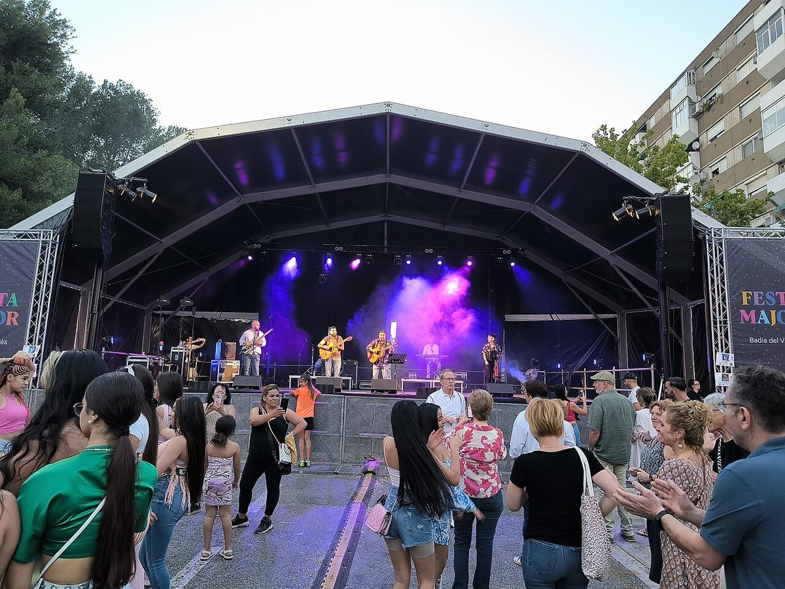

Fronteras que votan distinto · Elecciones: 23 de julio de 2023
Sant Cugat y Badia: 5,4 kilómetros, 23 puntos
Sant Cugat y Badia del Vallès, a 5,4 kilómetros: el PSC saca 23 puntos más en uno que en otro
Por Nacho G. del Álamo ·
El 23J, el PSC sacó el 48,7 % en Badia del Vallès y el 25,4 % en Sant Cugat, a 5,4 kilómetros. Junts, el 1,0 % y el 16,9 %. En cambio, PP, Vox y Cs juntos sacaron casi lo mismo en los dos (26,1 % y 24,7 %). La renta por unidad de consumo de Sant Cugat (39.397 euros) duplica la de Badia (18.613).
Dato: verificable y reproducible
Ver Sant Cugat del Vallès en el mapa →Ver Badia del Vallès en el mapa →
La pregunta: ¿Qué separa en las urnas al municipio más rico del Vallès de uno de sus vecinos más pobres?
Dos municipios en cinco kilómetros
DatoSant Cugat del Vallès tiene 96.191 habitantes; Badia del Vallès, 13.035. Entre los centros de sus términos municipales hay 5,4 kilómetros. En casi todo lo que mide el INE están en extremos opuestos: el 63,2 % de los adultos de Sant Cugat tiene estudios superiores, frente al 15,3 % en Badia; el paro era del 7,4 % y del 21,2 % en 2021.
DatoEl PSC ganó en los dos el 23J. En Badia, con el 48,7 %; en Sant Cugat, con el 25,4 %, por delante de PP (17,7 %) y Junts (16,9 %). Junts sacó en Badia el 1,0 % y ERC, el 5,0 %.
La frontera no es izquierda y derecha
DatoPP, Vox y Cs sumaron el 24,7 % en Sant Cugat y el 26,1 % en Badia. Por dentro, el reparto es distinto: el PP sacó más en Sant Cugat (17,7 % frente a 13,4 %) y Vox, más en Badia (12,7 % frente a 7,0 %).
PatrónAdemás del PSC, lo que más separa a los dos municipios es el voto independentista: Junts y ERC suman el 28,8 % en Sant Cugat y el 6,0 % en Badia. En esta parte del Vallès, la renta, los estudios y el voto independentista apuntan en la misma dirección.
DatoEl modelo de esta serie, que predice el voto a PP, Vox y Cs, acierta en Sant Cugat (27,1 % previsto) y se queda corto en Badia, donde predice un 16,3 % y la derecha sacó 9,9 puntos más.
También se vota distinto
DatoLa participación fue del 72,4 % en Sant Cugat y del 60,9 % en Badia. En las municipales de mayo, del 57,4 % y del 48,2 %.
DatoEn mayo, Badia volvió a dar la mayoría al PSC (51,2 %). En Sant Cugat ganó la lista de Junts (28,2 %).
Una línea que se repite
DatoMatadepera y Terrassa, también vecinas (5,6 kilómetros), repiten el patrón. En Matadepera, con 42.710 euros de renta, ganó Junts (31,0 %) y el PSC sacó el 14,9 %. En Terrassa, con 22.901 euros, ganó el PSC con el 36,5 % y Junts sacó el 8,3 %.
Sobre el terreno
DatoBadia del Vallès nació como un polígono de vivienda protegida: sus bloques se levantaron en los años setenta y, hasta 1994, la entonces llamada Ciutat Badia la gestionó una mancomunidad de Barberà del Vallès y Cerdanyola del Vallès, de cuyos términos se segregó para ser municipio. Fuentes: 1, 2
DatoBadia del Vallès ocupa 0,93 kilómetros cuadrados, y en ellos viven unas 13.000 personas. Fuentes: 1, 2
Lo que no sabemos
- HipótesisPor qué el voto independentista se reparte así. El origen de la población, la lengua habitual y la historia urbanística de Badia, construida como polígono de vivienda, son hipótesis que esta pieza no ha contrastado con datos ni con dos fuentes independientes.
Dato: verificable y reproducible. Patrón: relación descriptiva, sin causa. Hipótesis: explicación posible que aún no tiene dos fuentes independientes.
Los datos
| Municipio | Renta | Estudios sup. | PSC | PP | Sumar | Junts | ERC | Vox | Participación |
|---|---|---|---|---|---|---|---|---|---|
| Matadepera | 42.710 | 57,1 | 14,9 | 15,6 | 6,6 | 31,0 | 14,3 | 7,0 | 69,1 |
| Sant Cugat del Vallès | 39.397 | 63,2 | 25,4 | 17,7 | 13,3 | 16,9 | 11,9 | 7,0 | 72,4 |
| Sant Quirze del Vallès | 33.988 | 49,3 | 28,4 | 14,2 | 12,5 | 14,3 | 15,3 | 8,6 | 71,9 |
| Cerdanyola del Vallès | 27.084 | 38,9 | 39,3 | 14,3 | 17,5 | 6,4 | 10,5 | 7,1 | 70,4 |
| Barberà del Vallès | 24.135 | 33,4 | 41,8 | 15,6 | 18,1 | 2,6 | 7,9 | 9,8 | 69,0 |
| Sabadell | 23.213 | 30,5 | 38,9 | 11,8 | 15,0 | 9,0 | 11,0 | 8,3 | 66,4 |
| Terrassa | 22.901 | 31,1 | 36,5 | 12,3 | 16,0 | 8,3 | 11,4 | 10,0 | 65,3 |
| Rubí | 22.366 | 29,9 | 39,9 | 14,0 | 15,7 | 4,6 | 10,1 | 10,9 | 64,3 |
| Badia del Vallès | 18.613 | 15,3 | 48,7 | 13,4 | 15,3 | 1,0 | 5,0 | 12,7 | 60,9 |
Método y fuentes
- Qué se compara
- Nueve municipios del Vallès Occidental, con Sant Cugat y Badia, separados por 5,4 kilómetros, como pareja principal.
- Límites
- Distancia entre los centroides de los términos municipales. «Derecha» suma PP, Vox y Cs. Los datos agregados por municipio no dicen quién vota a quién dentro de cada municipio.
- Metodología completa
- Cómo se calculan los porcentajes, el modelo, los gemelos y los escaños
- Fuentes
- Ministerio del Interior, resultados electorales por mesa (Infoelectoral). Congreso 2004-2023 vía pollspaindata, commit ee5ecda; municipales 2007-2023 de los ficheros de Infoelectoral
- INE, Atlas de Distribución de Renta de los Hogares 2023 (renta, edad, población), vía ineAtlas.data
- INE, Censo de Población y Viviendas 2021 (estudios, paro, extranjeros)
- Autoría
- Nacho G. del Álamo
- Revisión de datos y texto
- Nacho G. del Álamo, 7 de octubre de 2026
- Publicado · actualizado
- 7 de octubre de 2026 · 7 de octubre de 2026
- Correcciones
- Ninguna. Historial del Atlas
Sigue leyendo
- Fronteras que votan distintoOntígola, uno de los 36 municipios donde ganó Vox
- Fronteras que votan distintoDos orillas de la ría, dos votos
- Las excepcionesJódar, el municipio que menos vota para su perfil
Todas las piezas de «Fronteras que votan distinto» · Todo el Atlas